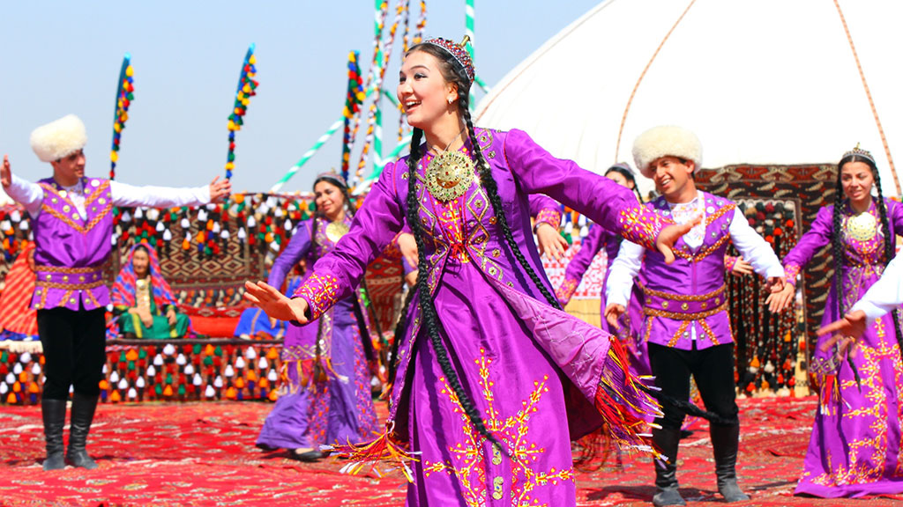

Azerbaijan
About The Country
Azerbaijan, officially the Republic of Azerbaijan, is a transcontinental country located at the boundary of Eastern Europe and Western Asia.
It is a part of the South Caucasus region and is bounded by the Caspian Sea to the east, Russia (Republic of Dagestan) to the north, Georgia to the northwest,
Armenia and Turkey to the west, and Iran to the south. Baku is the capital and largest city.
The Azerbaijan Democratic Republic proclaimed its independence from the Transcaucasian Democratic Federative Republic in 1918 and became the first secular
democratic Muslim-majority state. In 1920, the country was incorporated into the Soviet Union as the Azerbaijan SSR. The modern Republic of Azerbaijan proclaimed its independence
on 30 August 1991, shortly before the dissolution of the Soviet Union in the same year.
In September 1991, the ethnic Armenian majority of the Nagorno-Karabakh region formed the self-proclaimed Republic of Artsakh.
The region and seven surrounding districts are internationally recognized as part of Azerbaijan pending a solution to the status of the Nagorno-Karabakh through negotiations facilitated by the OSCE,
although became de facto independent with the end of the First Nagorno-Karabakh War in 1994.
Following the Second Nagorno-Karabakh War in 2020, the seven districts and parts of Nagorno-Karabakh were returned to Azerbaijani control
culture

Azerbaijani culture is a blend of East and West, with influences predominantly from Middle Eastern, Russian and Turkish cultures.
Most of the population are Azerbaijani, also known as Azeri, with minority groups including Russians, Turks, Kurds, Lezgians and Talysh.The heritage, culture, and civilization of Azerbaijan have ancient and modern roots.
Its people are believed to be descendants of ancient peoples who include indigenous Caucasian Albanian tribes, such as the Scythians and Alans, and the later Oghuz Turks.
Food
.webp)